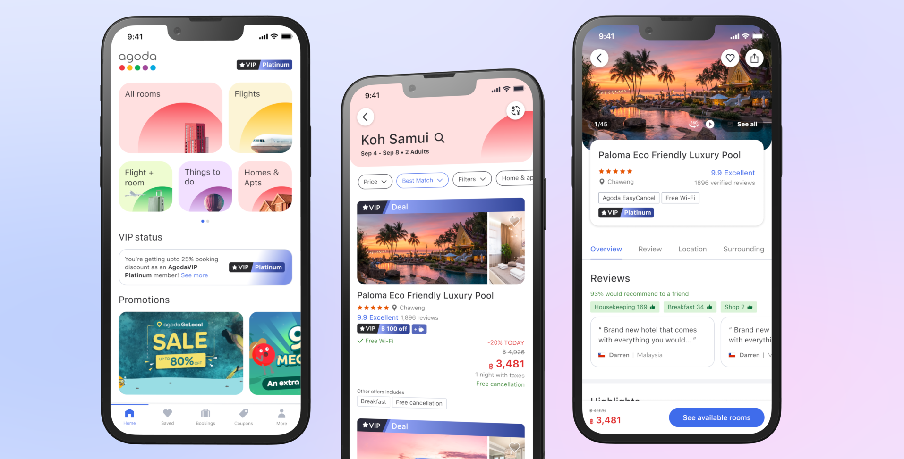

01
Better summary consumption
Redesigned summaries from dense paragraphs into shorter, more scannable experiences optimized for mobile reading.
Ten years of design craft + taste + vibe coding fluency to bring ideas to life.

Hey, I'm Mehak.
I design AI experiences inside Microsoft Outlook, currently designing and vibe-coding
Summarize and AI features built to help people cut through inbox noise. Before this, I designed
Agoda's loyalty program to drive deeper app engagement, and at SAP,
built B2B tools spanning project management and data privacy, helping users manage their time and control their data.
Based in Shanghai.
Microsoft, 2024-26
Project summary
Summarize is Outlook Mobile's most-used Copilot scenario, but success was never just about generating summaries. The real challenge was helping users quickly understand complex conversations and take action without adding cognitive load. Over time, the experience evolved from a reactive AI feature into an intelligent, embedded experience that lives directly within the reading flow.
Market: Global | Platform: Outlook Mobile | Release: 2024-Present
My role
I led the evolution of Summarize across mobile and cross-platform experiences through summary UX and information architecture, card framework design, prompt and content design, Suggested User Actions (SUAs), proactive summary concepts, and on-canvas summary experiences.
The problem
Early versions of Summarize faced four key challenges: low discoverability because the feature was hidden behind buttons and menus; long, dense AI-generated text that was difficult to scan on mobile; reactive workflows that required users to manually invoke AI; and limited support for helping users understand what to do next.
Impact
Summarize evolved from a standalone AI feature into a scalable card-based intelligence framework. The work reduced cognitive load, improved discoverability, enabled contextual actions, and laid the foundation for future agentic experiences across Outlook. Mobile MAU: iOS - 3.7 million users; Android - 1 million users. Retention: iOS - 36.03%; Android - 27.44%.
Experience evolution
01
Redesigned summaries from dense paragraphs into shorter, more scannable experiences optimized for mobile reading.
02
Introduced card-based experiences with contextual actions, helping users move from understanding content to taking action.
03
Explored AI experiences that automatically surfaced relevant summaries for complex conversations, reducing the need for manual invocation.
04
Helped evolve Summarize into an embedded reading-pane experience, bringing AI directly into the user's workflow and improving discoverability, engagement, and usability.

Agoda, 2019-22
Project summary
Agoda's VIP program faced low awareness, unclear benefits, and declining engagement. I helped redesign the experience across app and web, making loyalty benefits easier to discover, understand, and use throughout the booking journey.
Market: Global | Platform: App and web | Release: 2021

My role
As Lead Product Designer, I led 2 junior designers, defined the North Star and MVP roadmap, and partnered with Product, Research, Marketing, and Engineering from discovery through experimentation.
Impact
The redesign contributed approximately 60K monthly bookings in Q4 2021. Key experiments delivered +2.38% net bookings and 4K additional monthly bookings, while the personalized homepage generated +0.81% net bookings and 1K additional monthly bookings.
Experience evolution
01
Simplified VIP tiers, benefits, status, and progression.
02
Integrated VIP messaging into home, search, property, booking, and post-booking experiences.
03
Surfaced discounts and perks where they could influence hotel and room selection.
04
Created reusable patterns that informed Agoda's broader app refresh.
Selected work
Designed a confidence anatomy pattern that made model outputs easier to evaluate in high-stakes workflows.
Expanded an existing component library to support streaming states, uncertainty handling, and recovery flows.
Reframed technical model behavior into human-readable decision cues for product and support teams.
How I work
The most important design decisions happen before anything goes into Figma. I push back on assumptions, reframe problems, and make sure the team is solving the right thing before we spend time solving it well.
I don't consider a feature done when the specs are delivered. I stay in the work through engineering, track usage after launch, and iterate until the experience actually performs the way it was designed to.
Vibe coding is an integral part of my design toolkit. Showing stakeholders something real, connected to live data, moves alignment faster than any presentation deck. And in the world of AI, there's no better way to prove a direction works than to build it.